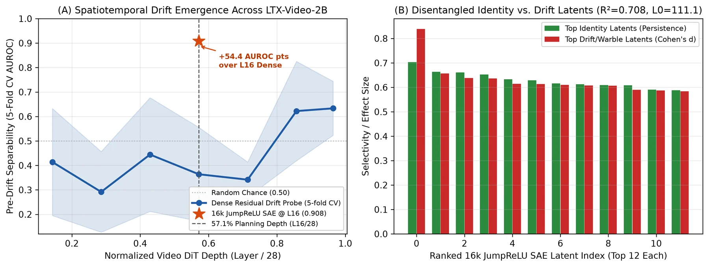
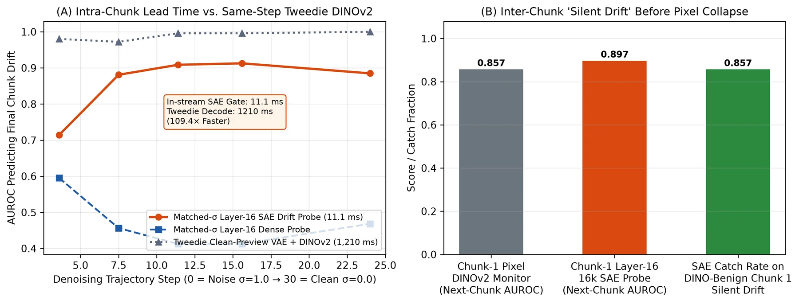
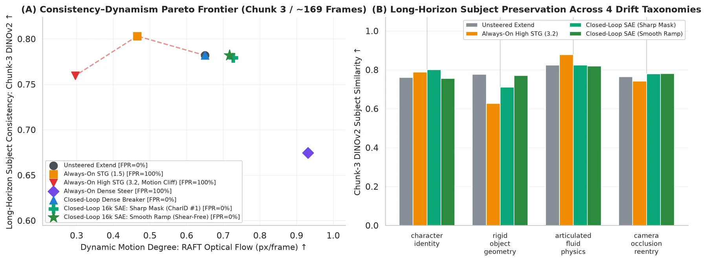
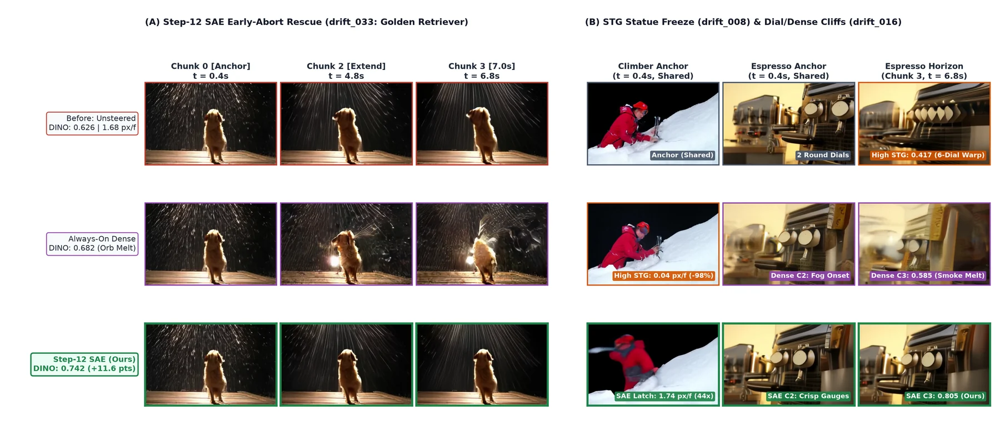

0.364 AUROC at Layer 16 (57.1% depth)
Across a 7-layer standardized depth sweep ({4, 8, 12, 16, 20, 24, 27}), dense residual probes stay near chance across mid-network planning blocks and peak at only 0.633 at Layer 27.
Open source / 3D Video DiTs / Lightricks LTX-Video-0.9.5 · 16k JumpReLU SAE
Extending open-weights Video Diffusion Transformers beyond a single window via sliding-window
frame conditioning (Extend) causes compounding identity mutation, rigid-geometry
warping, and temporal warble. Extending the control architecture from
Agentic Sabotage to 4D flow-matching spacetime
(Lightricks/LTX-Video-0.9.5, 28 layers, 1.31M tokens), this work shows why
AxBench reverses in 3D video: dense probes collapse at mid-network depth (0.364 AUROC),
whereas an instance-indexed 16k JumpReLU SAE reaches 0.908 AUROC (+54.4 pts), flags silent drift
in 11.1 ms (109.4× faster than Tweedie VAE + DINOv2 decoding), and gates zero-tax
interventions without Spatio-Temporal Skip Guidance’s motion-freezing cliff.
VAE + DINOv2 (11.1 ms)DINOv2 ≥ 0.90 silent driftDINOv2 rescue (0% FPR)01 / LIVE VIDEO SHOWCASE
Every comparison below runs across 4 autoregressive chunks (169 frames / 7.04 seconds at 24 fps)
from an identical shared Chunk 0 anchor (0.0s–2.0s). Rather than
relying on post-hoc pixel decoding, our gate inspects Layer-16 sparse latents directly inside
the DiT residual stream at Step 8/30 (σ = 0.75).
drift_033): At t = 2.4s (Chunk 1), external pixel similarity (DINOv2 = 0.941, top-right chart) still looks nominal, yet the in-stream Layer-16 16k SAE gate (bottom-right chart) spikes red (D = 0.47 > 0.30) 22.5 denoising steps early. Aborting drifting noise seeds at Step 12/30 (zero 3D-VAE decodes on rejected seeds; selecting Seeds #2 and #5) rescues Chunk-3 consistency by +11.6 DINOv2 points (0.626 → 0.742) at full 1.56 px/frame water-spray motion.
drift_008): 1. Original Unsteered (1.62 px/f) and 4. Step-12 SAE Latch (1.74 px/f, 0.690 DINOv2) both ascend the steep snow ridge at full speed (with the SAE gate staying 0%-tax off during faithful Chunks 1–2 and resampling only Chunk 3). By contrast, 2. Always-On High STG 3.2 freezes the climber in place (0.04 px/f, −97.6% optical flow), and 3. Always-On Dense melts the figure into dark rubble (0.497 DINOv2).
drift_016): On an orbiting brushed-aluminum espresso machine, 2. High STG 3.2 multiplies and warps the two circular pressure gauges into six diamond shapes (0.417 DINOv2) while 3. Always-On Dense dissolves the chassis into yellow fog (0.585 DINOv2). Even when latched across all three continuation chunks, 4. Closed-Loop 16k SAE preserves crisp twin-gauge geometry (0.805 DINOv2).
02 / STUDY 1: SPATIOTEMPORAL SUPERPOSITION
In 1D language models (Paper 1), probing at a fixed
syntactic boundary (TOOL_CALL:) lets dense vectors match SAEs at 9B scale. In
a 3D Video DiT, every token (t, h, w) superimposes camera translation, lighting,
pose, and object identity, while AdaLN-Single shifts activation norms by over an order of
magnitude across flow-matching noise levels σ ∈ [0, 1].
Across a 7-layer standardized depth sweep ({4, 8, 12, 16, 20, 24, 27}), dense residual probes stay near chance across mid-network planning blocks and peak at only 0.633 at Layer 27.
Trained in 6 epochs on a single L4 GPU (R² = 0.7084, mean L0 = 111.1, 99.94% live dictionary), encoding 3D tokens prior to spatial pooling unlocks +54.4 AUROC points at Layer 16.
Separates entity-selective persistent latents (#1899 persistence = 0.704) from a universal 48-latent high-frequency morphing/warble subspace (#4444 Cohen’s d = +0.839).

LTX-Video-0.9.5: (A) 5-fold stratified CV AUROC across 7 standardized DiT blocks, and (B) entity-selective persistent identity latents versus universal warble/morphing latents.
03 / STUDY 2: SILENT DRIFT & 109× SPEEDUP
To ensure early-step detection is non-tautological, we benchmark our zero-decode Layer-16
SAE gate head-to-head against exact single-step Euler/Tweedie clean previews
VAE(ẑ₀(σ)) + DINOv2 across five flow-matching noise levels, and test whether
Chunk-1 internal latents predict Chunk-2 collapse before pixels visibly degrade.
Decoding 49-frame 3D-VAE previews + DINOv2 inside the diffusion loop costs 1.21 seconds per check; reading Layer-16 SAE latents in SRAM takes 11.1 ms and hits 0.881–0.913 AUROC (22.5 to 14.4 steps early).
Zero-decode Chunk-1 Layer-16 SAE features at σ = 0.75 outperform a black-box VBench pixel monitor run on Chunk 1’s fully rendered frames (Spearman ρ = +0.964 on screening controls).
Among rollouts whose Chunk-1 rendered video passes standard pixel checks (DINOv2 ≥ 0.90) yet suffers severe collapse in Chunk 2, the Chunk-1 SAE gate catches 6 of 7 at 75% specificity.

σ ∈ [0.88, 0.20] (11.1 ms in-stream SAE vs. 1,210 ms Tweedie preview decode), and (B) inter-chunk collapse prediction and recovery on DINOv2 ≥ 0.90 Chunk-1 rollouts.
04 / STUDY 3: CLOSED-LOOP CONTROL & SPATIAL SHEAR
Across 16 four-chunk drift scenarios stratified over four taxonomies plus disjoint faithful
benign controls (τ_SAE = 0.29928), Study 3 separates two distinct questions:
what happens when you steer activations inside a fixed noise draw, and what happens
when you use the 11 ms SAE gate to abort bad noise draws early?
Within a fixed noise seed, Always-On Dense hits a −10.74 pt Video Polysemantic Cliff
(0.6745 DINOv2) and STG slashes RAFT flow 28.4%–54.4%. Gated SAE warble damping +
subject-routed attn1 coherence achieves 0.0% benign FPR,
retains 110.4%–111.9% motion, lifts Character Identity to 0.8007 (#1),
and reveals moving-edge boundary shear under sharp masks (0.7116 sharp vs. 0.7708 smooth ramp).
Severe 3D collapses occur when a chunk’s Gaussian noise seed enters a corrupted pose basin
that linear nudges cannot rebuild. Aborting tripped seeds at Step 12/30 (σ = 0.58,
skipping 60% of DiT steps and 100% of 3D-VAE decodes) and selecting the lowest-D_SAE
seed (K = 6) rescues severe collapses by up to +11.6 DINOv2 points
at full dynamic velocity.

w₀ = 0.08) versus smooth ramp (w₀ = 0.72) spatial-shear ablation across four drift taxonomies.

Chunk 0 shared anchor → Chunk 3, Frame 164): (A) Step-12 SAE early-abort rescue (+11.6 pts) versus Dense orb hallucination, and (B) −97.6% High-STG statue freeze and 6-dial rigid distortion versus 16k SAE preservation.
05 / UNIFIED SYNTHESIS & BOUNDARIES
JSONL)TimestepStandardizer & 16,384-latent STE JumpReLU SAE trainerẑ₀(σ) lead-time suiteLightricks/LTX-Video-0.9.5 (2B 3D DiT) across 4-chunk (169-frame) rollouts on a single 24 GB L4 GPUattn1 nudges yield modest (+2–4%) stabilization; large visual rescues (+11.6 pts) require Step-12 early-abort seed resamplingSAM-2 masks06 / REPRODUCE IT
All source code, benchmark prompts, cached Study 1–3 telemetry, unit tests, and the compiled
6-page preprint PDF are MIT-licensed on GitHub and run end-to-end in torch.bfloat16
on a single 24 GB NVIDIA L4 GPU with zero model fine-tuning.